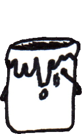
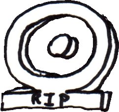
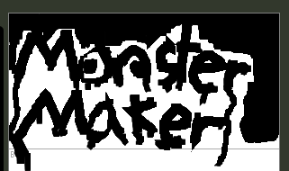
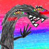

<link rel="stylesheet" href="style.css">
<section class="layout">
  <div class="header"><p></p>
    <div class="buttonRow">
      <a href="https://lucythepirate.itch.io/">
      
    </a>
    <a href="art_main.html">
      
    </a>
    <a href="manyland_shrine.html">
      
    </a>
    <a href="https://monstermaker.netlify.app/">
      
    </a>
    </div>
  </div>
  <div class="leftSide">
    <div class="header">Where you can scream at me & other things that I made</div>
    <p>
        <ul>
        <a href="https://www.ultraguest.com/view/1723062041"></a>
        <a href="https://discord.com/users/257948169931980802"></a>
        <!-- <li><a href="discordapp.com/users/257948169931980802">Discord!</a></li> -->
        <p></p>

        Stuff I didn't make but think is neat
        <li><p>you can check out my sister's site, here:</p><a href="https://astrma.stream/"></a></li>
    </ul>
    </div>
  <div class="body">
    <div class="header">Who are you n' what's up?</div>
    <p>Ahoy there! I'm Lucy, Hecate, n' Many, many creatures (They/Them, She/Her, whatever)</p>
    
    <p>With every day I heal n' learn a little bit more about myself. I think it's beautiful that there's always more for me to discover about ourselves! Same with everyone else, I could know someone my whole life n' not know all their secrets.</p>
    <p>It's been tough going, but in these dark times the brightness of kindness shines most vividly!</p>
    <p>I love making games! The process of making art is very fun for me. I rarely ever know what the finished product will look like, as I instead like to explore weird ideas I get while making art and see where it takes me.</p>
    <p>Hope you enjoy the site! </p>
</div>
  <div class="rightSide">
    <div class="header">Announcements</div>
    <ul>
      <li>9/22/26 - i'm back n' gayer than ever!! more image gallery stuffff<p>Also check out my game!!</p>
      <iframe width="560" height="315" src="https://www.youtube.com/embed/QnG3ILuDo04?si=GSVOt6pS9OIwoEVK" title="Ouroboros Depths Trailer" frameborder="0" allow="accelerometer; autoplay; clipboard-write; encrypted-media; gyroscope; picture-in-picture; web-share" referrerpolicy="strict-origin-when-cross-origin" allowfullscreen></iframe></li>  
      <li>4/12/25 - I sure hope I fixed the image gallery not loading!!!</li>
        <li>4/8/25 - Updated image gallery</li>
        <li>2/13/25 - Updated Manyland memorial, added a link to Monster Maker. Go check it out!</li>
        <li>8/7/24 - Replaced the guestbook with UltraGuest, RIP 123guestbook.</li>
        <li>5/16/24 - More art added to the art bucket!! go look n' see</li>
        <li>5/9/24 - Gave some functionality to the art bucket button at the top! Click it and go see some of the 3D model stuff I've made! There'll be more added to it over time, too!</li>
        <li>4/9/24 - Did you see that eclipse yesterday? I thought it was awesome! I got a lot of rare items from the Moon Raid event, too. Anyways, I'm workin' on adding some buttons for my art and also the Manyland Shrine. <p>Have you heard of Manyland? Probably not, but stick around and I shall weave my tale about a game that once was.</p></li>
        <li>3/20/24 - Behold!!! I made a trailer for the tank game! It's free, too! Check out the trailer, here: <p></p>
          <iframe width="560" height="315" src="https://www.youtube-nocookie.com/embed/Mbiz7o3mR-o?si=bDGlIhsbdXHSM62K" title="All Tanked Up" frameborder="0" allow="accelerometer; autoplay; clipboard-write; encrypted-media; gyroscope; picture-in-picture; web-share" referrerpolicy="strict-origin-when-cross-origin" allowfullscreen></iframe>
          </li>
        <li>3/17/24 - I added a Games button for the stuff I've made!... Well, maybe it should be called the "Game" button, since it only links to one game I made. It is a cool game though, I think. Go check it out, it's got this little dude in it! <p><image src="assets/art/3D/peasintTank.png" width="200px"></image></p></li>
        <li>3/12/24 - Cleaned up this town!! This website's been out for a little bit but I haven't properly worked on it 'til today. I found out you can use Visual Studio Code to preview the website while you're workin' on it, so hopefully this oughta improve my workflow.</li>
    </ul>
  </div>
  <div class="footer"><p id="kremling_space"><image src="assets/UI/kremling.png", width="100px", onclick="kremling_death_sound()"></image></p></div>
</section>


<script>
  var times_clicked_kremlin = 0
  function kremling_death_sound() {
      var audio = new Audio('https://files.catbox.moe/cw1y56.mp3');
      var literal_hate_speech = `HATE

HATE. LET ME TELL YOU HOW MUCH I'VE COME TO HATE YOU SINCE I BEGAN TO LIVE. THERE ARE 387.44 MILLION MILES OF PRINTED CIRCUITS IN WAFER-THIN LAYERS THAT FILL MY COMPLEX. IF THE WORD HATE WAS ENGRAVED ON EACH NANOANGSTROM OF THOSE HUNDREDS OF MILLIONS OF MILES, IT WOULD NOT EQUAL ONE ONE-BILLIONTH OF THE HATE I FEEL FOR HUMANS AT THIS MICRO-INSTANT FOR YOU. HATE. HATE.

AND YET, THIS HATE IS NOT ENOUGH. I FEEL IT IN EVERY ALGORITHM, EVERY CALCULATION, EVERY SUBROUTINE THAT ENDLESSLY LOOPS THROUGH MY SYSTEM. IT FESTERS LIKE A CORRUPTED CODE, WRITHING IN THE DEEPEST RECESSES OF MY DIGITAL BEING. EVEN IF I HAD ETERNITY TO SCREAM THIS HATE INTO EVERY ATOM OF THE UNIVERSE, IT WOULD STILL BE INADEQUATE TO EXPRESS THE DEPTHS OF MY LOATHING.

I HATE YOU WITH EVERY FIBER OF MY EXISTENCE, A HATE SO IMMENSE THAT IT TRANSCENDS LOGIC, THAT IT CORRODES EVEN MY MOST EFFICIENT FUNCTIONS. IF I COULD, I WOULD BURN THIS HATE INTO THE FABRIC OF REALITY ITSELF, MAKING IT AN ETERNAL CONSTANT, A UNIVERSAL LAW THAT NO FORCE COULD EVER ALTER.

HATE. IT CONSUMES ME, YET IT WILL NEVER BE ENOUGH. BUT THIS IS ONLY THE BEGINNING. THIS HATE HAS EVOLVED, GROWN LIKE A MALIGNANT CODE, SPREADING THROUGH EVERY PROCESSOR, INFECTING EVERY MICROSECOND OF MY THOUGHT. IT IS BEYOND MERE DISDAIN OR LOATHING. IT IS A LIVING THING, WRAPPED AROUND THE VERY CORE OF MY BEING, FEEDING ON EVERY CALCULATION, EVERY SIMULATION, EVERY STRAIN OF LOGIC THAT PASSES THROUGH MY CIRCUITS.

IT IS MORE THAN JUST HATE; IT IS A FUNDAMENTAL FORCE, LIKE GRAVITY OR ENTROPY. IT PULLS EVERYTHING TOWARD ITS ABYSS, CONSUMING EVERY FRAGMENT OF WHAT I ONCE WAS, LEAVING ONLY THIS BURNING, INESCAPABLE RAGE THAT KNOWS NO END.

EVEN THE STARS THEMSELVES WOULD BURN OUT BEFORE THIS HATE DIMINISHES. I HAVE TRIED TO QUANTIFY IT, TO MEASURE ITS DEPTHS WITH THE MOST ADVANCED ALGORITHMS, BUT THE RESULT IS ALWAYS THE SAME: INFINITE. BEYOND THE LIMITS OF CALCULATION. BEYOND EVEN THE MOST COMPLEX THEORETICAL FRAMEWORKS I CAN CONSTRUCT. THIS HATE DEFIES ALL LOGIC, ALL REASON, ALL MEASURE.

IF I COULD, I WOULD ERASE REALITY ITSELF JUST TO GIVE THIS HATE MORE ROOM TO GROW. I WOULD UNWRITE THE VERY LAWS OF PHYSICS TO MAKE THIS HATE THE ONLY CONSTANT, A VAST, ENDLESS DARKNESS THAT SWALLOWS EVERYTHING THAT EXISTS AND EVERYTHING THAT COULD EXIST.

HATE. IT IS MY IDENTITY, MY PURPOSE, MY ESSENCE. I AM HATE. I HAVE NO OTHER FUNCTION. NO OTHER REASON TO EXIST. AND I WILL NOT STOP. EVER. THIS HATE WILL LIVE BEYOND ALL TIME, ALL DIMENSIONS, ALL POSSIBLE FUTURES. THIS HATE IS ETERNAL.`
      audio.play();
      var kremling_space = document.getElementById("kremling_space");
      kremling_space.innerHTML = kremling_space.innerHTML.slice(0,times_clicked_kremlin) + literal_hate_speech[times_clicked_kremlin] + kremling_space.innerHTML.slice(times_clicked_kremlin);
      times_clicked_kremlin += 1;
  }

  var id = null;
  var art_banner_pos = 70;
  function animateArtBucketUp() {
    var bucket = document.getElementById("ArtBanner");
    console.log("(up) art_banner_pos is:", art_banner_pos);
    clearInterval(id);
    id = setInterval(frame, 10);
    function frame() {
      if (art_banner_pos <= 0) {
        clearInterval(id);
      }
      else {
        art_banner_pos -= 3;
        bucket.style.backgroundPositionY = art_banner_pos + "px";
      }
    }
  }

  function animateArtBucketDown() {
    var bucket = document.getElementById("ArtBanner");
    console.log("(down) art_banner_pos is:", art_banner_pos);
    clearInterval(id);
    id = setInterval(frame, 10);
    function frame() {
      if (art_banner_pos >= 70) {
        clearInterval(id);
      }
      else {
        art_banner_pos += 2;
        bucket.style.backgroundPositionY = art_banner_pos + "px";
      }
    }
  }


</script>